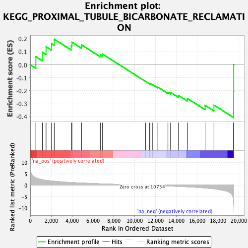
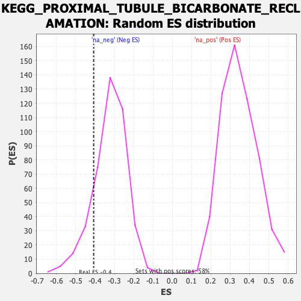

| | | Dataset | PFS |
| Phenotype | NoPhenotypeAvailable |
| Upregulated in class | na_neg |
| GeneSet | KEGG_PROXIMAL_TUBULE_BICARBONATE_RECLAMATION |
| Enrichment Score (ES) | -0.40735608 |
| Normalized Enrichment Score (NES) | -1.2603207 |
| Nominal p-value | 0.1452381 |
| FDR q-value | 0.43896544 |
| FWER p-Value | 0.999 |
Table: GSEA Results Summary

Fig 1: Enrichment plot: KEGG_PROXIMAL_TUBULE_BICARBONATE_RECLAMATION
Profile of the Running ES Score & Positions of GeneSet Members on the Rank Ordered List
| SYMBOL | RANK IN GENE LIST | RANK METRIC SCORE | RUNNING ES | CORE ENRICHMENT | | 1 | ATP1A4 | 536 | 3.240 | 0.0625 | No |
| 2 | SLC4A4 | 1161 | 2.402 | 0.0973 | No |
| 3 | CA4 | 1515 | 2.137 | 0.1385 | No |
| 4 | ATP1B2 | 2037 | 1.841 | 0.1630 | No |
| 5 | ATP1B4 | 2300 | 1.725 | 0.1975 | No |
| 6 | AQP1 | 3927 | 1.168 | 0.1466 | No |
| 7 | ATP1B1 | 3999 | 1.146 | 0.1748 | No |
| 8 | GLS | 4914 | 0.934 | 0.1538 | No |
| 9 | ATP1B3 | 6721 | 0.597 | 0.0778 | No |
| 10 | GLS2 | 6931 | 0.561 | 0.0827 | No |
| 11 | CA2 | 11067 | -0.046 | -0.1281 | No |
| 12 | ATP1A1 | 11452 | -0.099 | -0.1450 | No |
| 13 | MDH1 | 11481 | -0.103 | -0.1436 | No |
| 14 | PCK2 | 11704 | -0.136 | -0.1512 | No |
| 15 | GLUD1 | 12237 | -0.217 | -0.1725 | No |
| 16 | SLC38A3 | 13203 | -0.377 | -0.2115 | No |
| 17 | ATP1A3 | 13454 | -0.418 | -0.2127 | No |
| 18 | SLC25A10 | 14213 | -0.557 | -0.2360 | No |
| 19 | GLUD2 | 15079 | -0.736 | -0.2599 | No |
| 20 | PCK1 | 16767 | -1.237 | -0.3121 | Yes |
| 21 | ATP1A2 | 17617 | -1.614 | -0.3108 | Yes |
| 22 | SLC9A3 | 19502 | -7.188 | -0.2077 | Yes |
| 23 | FXYD2 | 19508 | -7.513 | 0.0008 | Yes |
Table: GSEA details [plain text format]

Fig 2: KEGG_PROXIMAL_TUBULE_BICARBONATE_RECLAMATION: Random ES distribution
Gene set null distribution of ES for KEGG_PROXIMAL_TUBULE_BICARBONATE_RECLAMATION